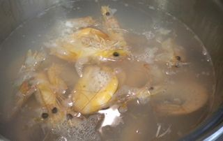
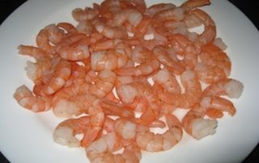
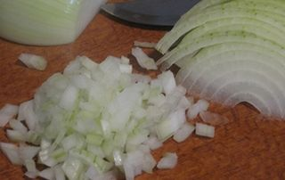
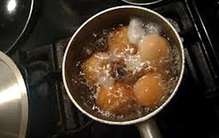
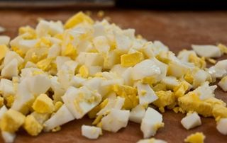
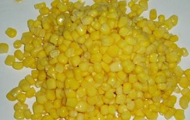
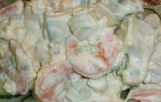

Шаг 1: подготавливаем креветки.

Креветки замечательно сочетаются со многими продуктами, поэтому они являются отличным компонентом для салатов. К тому же мясо креветок очень полезное, так как в нем содержится большое количества фосфора, белка, железа, йода, магния и кальция. В супермаркетах часто продают уже вареный замороженный морской продукт. Нам важно для приготовления нашего салата быстро и правильно разморозить наш ингредиент. Для этого выкладываем готовые замороженные креветки в свободную кастрюлю и наливаем в эту емкость крутой кипяток. Жидкость должна полностью покрыть морепродукты. Через 5-7 минут сливаем воду с кастрюли в дуршлаг, а готовые креветки после того как вода вся стечет, перекладываем в свободную миску. При размораживании нашего ингредиента таким способом мясо креветок становится сочным и вкусным.

Затем каждую креветку вручную очищаем от панциря и перекладываем очищенное мясо в чистую миску. Если у вас большие по размерам креветки, тогда перекладываем их на разделочную доску и с помощью кухонного ножа нарезаем наш ингредиент на более мелкие кусочки. Внимание: если для салата вы купили сырые креветки, тогда перед тем как вы будете их варить, промойте ингредиент под прохладной проточной водой, а затем, переложив их в кастрюлю с подсоленной водой, варите в течение 3-5 минут. В кипящую воду с креветками можно добавить лавровый лист и горошек душистого перца. Очень важно не переварить морепродукты, так как от этого креветки станут жесткими, как резина.
Шаг 2: подготавливаем свежие огурцы.
Огурцы промываем под проточной водой и перекладываем на разделочную доску. С помощью ножа нарезаем овощ вдоль на несколько пластинок. А затем, огуречные пластинки нарезаем на небольшие брусочки и перекладываем их в свободную тарелку. Так как овощной ингредиент довольно сочный, нарезать его желательно перед самой подачей нашего блюда.
Шаг 3: подготавливаем лук.

Лук с помощью кухонного ножа очищаем от шелухи и хорошо промываем его под проточной водой. Затем перекладываем овощной ингредиент на разделочную доску и с помощью того же острого инвентаря нарезаем его на небольшие квадратики. Перекладываем измельченный лук в свободную миску.
Шаг 4: подготавливаем яйца.

Куриные яйца промываем под теплой проточной водой и перекладываем в кастрюлю с водой комнатной температуры. Жидкость должна полностью покрывать яйца. Ставим эту емкость на средний огонь и после того как вода закипит, в кастрюлю добавляем щепотку соли, чтобы яичная скорлупа не треснула во время варки яиц. Для салата нам понадобятся яйца, сваренные вкрутую, поэтому варим их с момента закипания воды 8-10 минут на среднем огне. По окончании варки посуду с яйцами ставим под холодную проточную воду, чтобы яичная скорлупа лучше очистилась. Затем снимаем с яиц скорлупу и перекладываем их на разделочную доску.

С помощью острого инвентаря разрезаем яйца пополам, а затем каждую половинку нарезаем полукольцами и перекладываем в свободную тарелку. Внимание: по желанию яичный ингредиент можно измельчить так, как вам больше это нравится. Например, квадратиками или небольшими кусочками.
Шаг 5: подготавливаем консервированную кукурузу.

Приоткрываем не до конца крышку банки с консервированной кукурузой с помощью консервного ножа. Сливаем жидкость в раковину, а наш ингредиент выкладываем из емкости в сито. Затем кукурузу промываем теплой кипяченой водой из кружки. Когда вода стечет, перекладываем ее из сита в чистую миску.
Шаг 6: готовим быстрый салат с креветками.

В миску к готовым креветкам перекладываем друг за другом измельченные куриные яйца, репчатый лук, свежий огурец и консервированную кукурузу. С помощью столовой ложки хорошо перемешиваем наши ингредиенты между собой и добавляем в эту емкость майонез. Еще раз все хорошо и аккуратно перемешиваем до образования однородной массы.